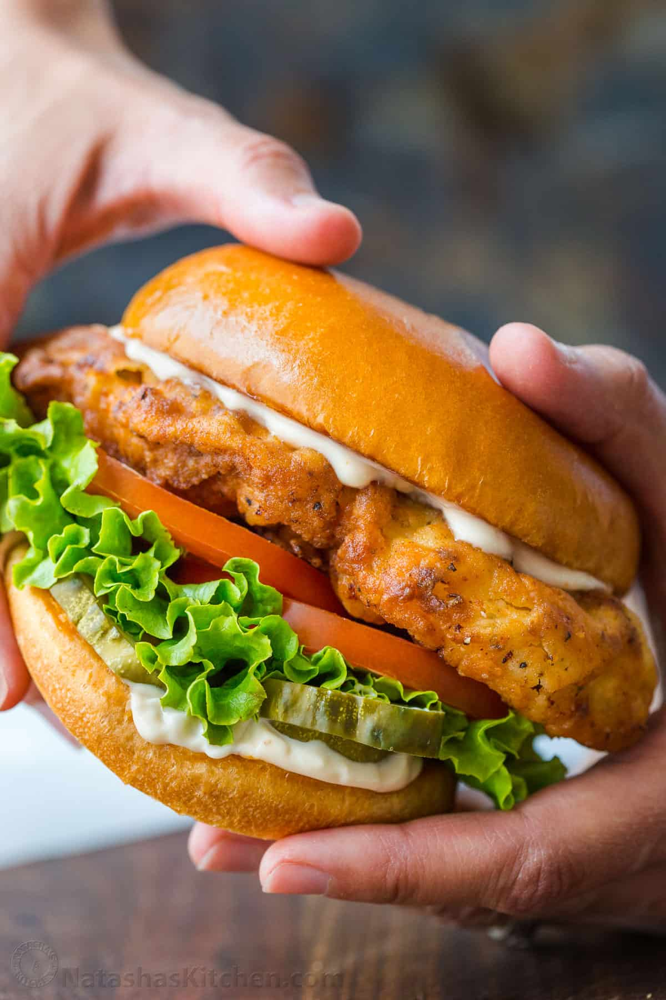

Super-Crispy
Fried Chicken
Sandwiches
Ingredients
- 2 (16-ounce) jars dill pickle chips
- 1/2 cup brine reserved and 60 pickle chips reserved
- 2 tablespoons kosher salt, divided
- 2 teaspoons paprika
- 1 tablespoon plus 1 teaspoon black pepper, divided
- 1/2 teaspoon cayenne pepper, or more to taste
- 1/2 teaspoon garlic powder
- 1/2 teaspoon onion powder
- 12 boneless, skinless chicken thighs (about 3 pounds)
- 1 cup buttermilk or well-stirred plain whole-milk yogurt
- 1/2 cup water
- 1 large egg
- 4 cups all-purpose flour (about 17 ounces)
- 1/4 cup cornstarch
- Peanut oil, for frying
- 1 cup mayonnaise
- 12 hamburger buns
- 6 cups shredded iceberg lettuce
- 12 ripe beefsteak tomato slices (optional)

Instructions
- Stir together 1/2 cup pickle brine, 1 tablespoon salt, paprika, 1 teaspoon black pepper, cayenne pepper, garlic powder, and onion powder in a small bowl. Place chicken thighs in a gallon-size zip-close bag; pour in pickle brine mixture. Seal bag and massage until chicken is evenly coated with brine mixture. Place in refrigerator; let marinate at least 2 hours or up to 8 hours or overnight.
- Whisk together buttermilk, 1/2 cup water, and egg in a large bowl. Remove chicken from brine; discard brine. Add chicken to buttermilk mixture. Whisk together flour, cornstarch, remaining 1 tablespoon salt, and remaining 1 tablespoon black pepper in shallow dish. Set aside.
- Preheat oven to 200°F. Pour oil to a depth of 1/2 inch in a 12-inch cast-iron skillet; heat oil over medium to 350°F.
- Working in batches, remove three or four chicken thighs from buttermilk mixture and place in flour mixture. Cover chicken with flour mixture, pressing to adhere. Lift from flour mixture and gently shake off excess. Carefully place chicken in hot oil, making sure not to overcrowd skillet. Cook, adjusting heat as needed to maintain oil temperature of 350°F and turning every 1 to 2 minutes using tongs, until a thermometer inserted in thickest portion of thigh registers 165°F and breading is golden brown and very crispy, 6 to 8 minutes per batch. Remove chicken from skillet and place on a wire rack set inside a rimmed baking sheet. Place in preheated oven to keep warm while repeating frying process with remaining chicken.
- Spread 1 heaping tablespoon mayonnaise onto cut sides of each bun. Arrange 5 to 6 pickle chips on each bun bottom; top with one fried chicken thigh, 1/2 cup shredded lettuce, and, if desired, one tomato slice. Cover with bun tops.